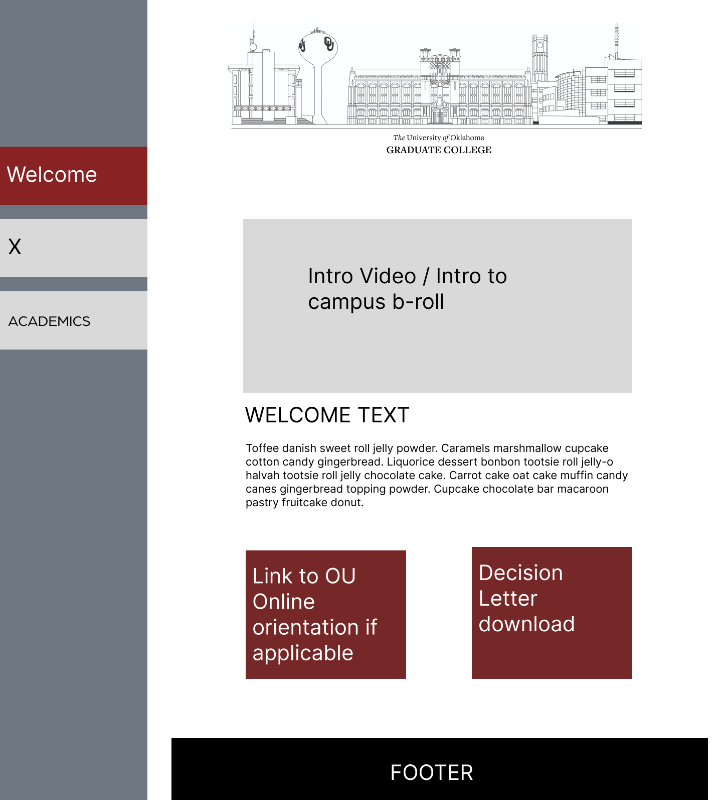
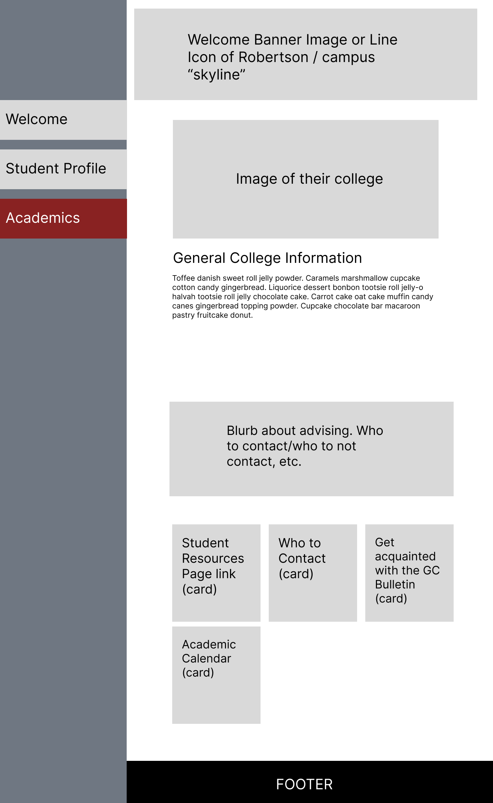
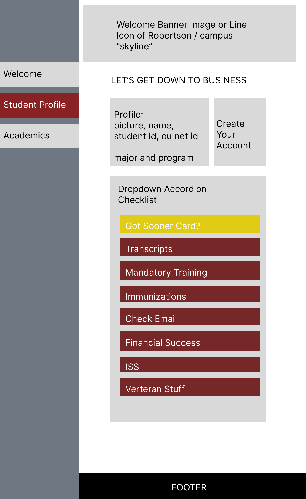
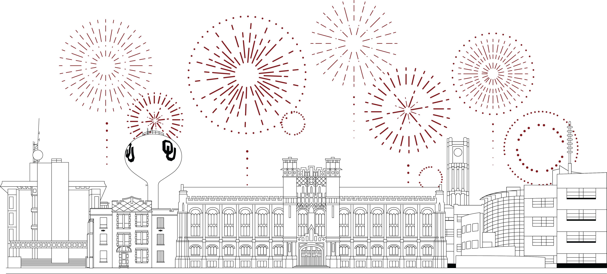
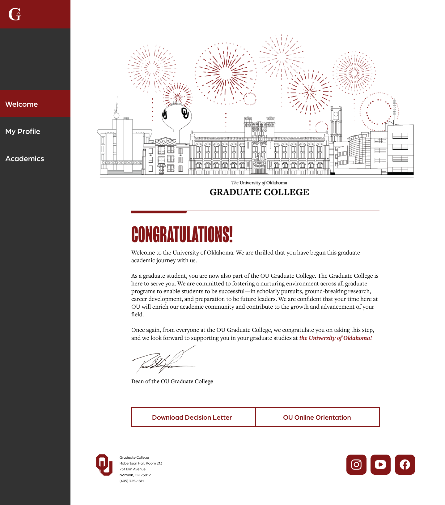
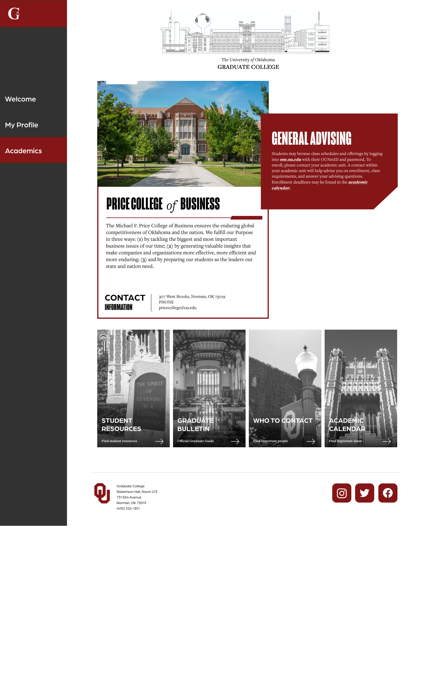
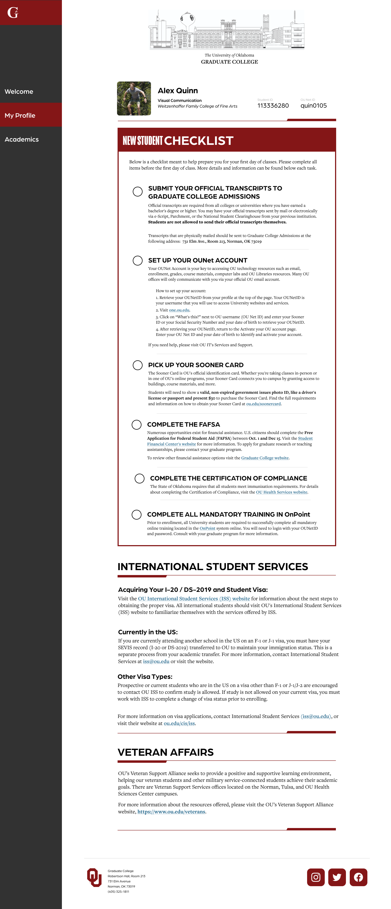

GRAD PORTAL
Mar 2023 - Aug 2023
Welcome to the "New Graduate Student Welcome Portal" project, a vital initiative designed
to ease the transition from undergraduate to graduate school. This portal provides a warm
congratulatory message to new and returning students, offers comprehensive resources about
their respective colleges, and includes a detailed checklist of essential pre-first day
tasks.
Crafted in Figma and implemented using Slate with HTML, CSS, and a touch of
JavaScript, this project streamlines the onboarding process, offering a user-friendly,
all-in-one hub for crucial information. By centralizing these resources, the portal
significantly enhances the graduate student experience, ensuring a smoother start to
their academic journey.
FINAL PRODUCT

LOW FIDELITY
The design foundation of this project, in both high and low fidelity, was driven by another application that students use to apply. The Graduate College wanted to mirror the sidebar navigation layout from that application in order to make the transition smoother and familiar to students.



BRINGING OU SPIRIT
The landing page for this new portal needed something eye-catching; something exciting. While the Graduate College would love to record a welcome video with the dean, the resources and time constraint made it difficult to accomplish this goal. Instead, the idea was to create a skyline of the university with an emphasis on including buildings less common to the typical flashy marketing campaigns, but pivotal to the graduate experience.

(from left to right) The college of engineering, Robertson Hall (home of the Graduate College), Bizzell Memorial Library, the clock tower, and the National Weather Center at the research campus.
HIGH FIDELITY
The final mockups were designed with expansion in mind. The side navigation has extra room for more pages, and the academics page is also built to accommodate more content if needed. The New Student Checklist also displays information based on certain conditions. For example, veterans and or international students will have extra sections for information relevant to them that other students would not normally see.


